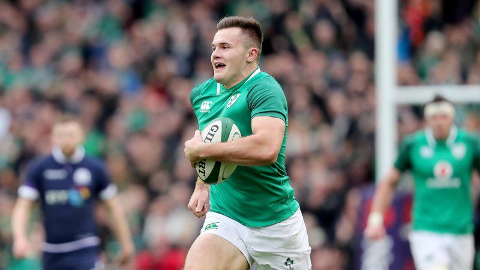

Stockdale double inspires Ireland to bonus-point win
10 March 2018
Stockdale grabbed his fifth and sixth tries of 2018 6 Nations to inspire Ireland to a powerful bonus-point victory over Scotland putting them on the verge of third-ever Grand Slam.
Greig Laidlaw opened the scoring with a penalty but then the 21-year-old winger took over, replicating his try against Wales with an intercept from Peter Horne's pass. Stockdale grabbed a second and after the break came Ireland's third, with Conor Murray barging over from short distance. Blair Kinghorn delivered an excellent finish to score Scotland's only try, but in the final quarter replacement hooker Sean Cronin found his way over to secure the bonus point and the best possible chance of a Championship title. The first man in the contest to blink was Finn Russell, who spilled a high ball from Jonathan Sexton to allow the Irish upfield where they worked a penalty opportunity.
Despite being central, Ireland opted for the aggressive option of kicking to the corner but then failed to collect the resultant lineout, allowing Scotland to clear their lines. The home side looked nervy, with Sexton making an uncharacteristic knock-on to allow Scotland to gain ground and earn their own penalty opportunity - which Laidlaw duly converted on 13 minutes. The visitors continued to attack and Sean Maitland broke down the right before Irish openside Dan Leavy managed to place himself over a ruck and win back possession through the penalty.
After a bang to the head, Scottish No.8 Ryan Wilson failed his HIA and minutes later came the first try of the match, with Stockdale intercepting Horne's pass to run in 50 metres to the posts, just past the quarter-point of the match. Sexton converted and five minutes later Ireland were breaking again, centre Garry Ringrose slipping through the midfield. Just before the half-hour Huw Jones broke from his own half, chipped past the defence to make it to the Irish 22 but then couldn't direct his pass to Stuart Hogg as the tryline beckoned. An overthrown lineout just before the interval then led to Ireland's second try, with Rob Kearney first breaking down the left and Stockdale finishing off in the corner several phases later, stepping inside Kinghorn.
Kinghorn started the second period well with a break down the right but Ireland were able to turn the ball over once again and were soon turning the screw, chipping away with an up-and-under. Horne was penalised for holding on in his 22 and Sexton once again kicked for the corner, with Murray collecting off the resultant lineout and driving through two tackles to register Ireland's third try. A fightback had to come and so it transpired as a penalty allowed Scotland into the opposition half, then from an attacking scrum the ball found its way to Kinghorn who finished superbly in the corner. Laidlaw missed the conversion and an opportunity for more points went begging moments later with Jones' inaccurate pass to Kinghorn, before excellent tryline defence from Scotland prevented a fourth score.
On 64 minutes Scottish replacement David Denton was penalised for obstructing Murray but Sexton pulled his effort wide of the post from 35 metres out. Moments later the hosts were presented another penalty but this time opted to kick to the corner, and from the resultant lineout the catch-and-drive move saw hooker Cronin over the line. Sexton added the extras and with ten minutes left to play the visitors tried desperately to get back into the match and forced their way downfield, but replacement lock Tim Swinson was unable to place the ball down just short of the line.